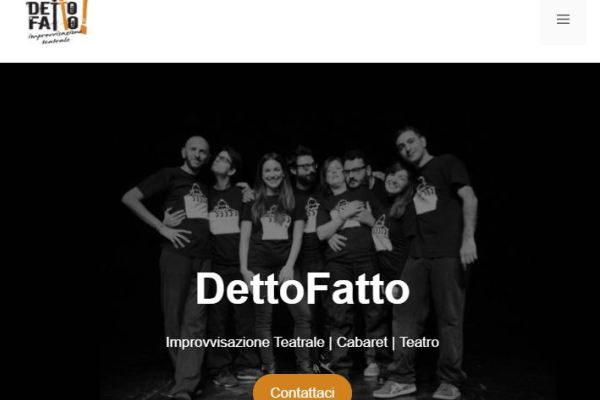

About Me
My story is a little bit unusual. I took a degree in
Mechanical Engineering in 2002 and, after one year working at
Politecnico di Torino as a researcher, I started to work
at Fiat Auto, then FCA Group, as a project chief. Here I learnt
a lot about team working and development process. I worked a lot
with integrations systems between veichle Electronic Control Units and Chassis.
I worked also as team leader and this was a good opportunity to
improve my leadership skills.
In 2014 I resigned and I started to work as a freelance in the theatral field.
This was a passion that gradually became my main activity. I have been working
also as a coach with training agencies in different companies
and associations. In particular, the improvisational theatre has been useful to
me for team-bulding activities and more.
Then in 2020, I was ready for a new challenge. During pandemic I
took the opportunity to deepen the study of the web. It was something that I
liked since University and that would have been 100% feasible online. So
I reviewed my basics in informatics and I decided to follow a web
development road map. I began studying Html, CSS and
Javasript. Then I explored many another aspect both back-end
and front-end. After a period working on Wordpress togheter
with the basics of PHP, finally I concentrated myself on front-end development,
adding React and Next.js and exploring Tailwind CSS, Material
UI and more regarding CSS frameworks. I've used also Sanity IO and GraphCMS as
headless CMS and Material UI as UI framework. I've been
practising a lot on Jamstack world.
Now I started to do some small projects for other people and I hope I will have
a chance to improve my experience in web development during years to come. I'm
available to work on different kind of projects as freelance or under contract
(part time or full time).
Main topics
My Projects
Following, you can find some of my projects. I put different kind of works
related to Wordpress, PHP, Vanilla Javasript (as this portfolio
itself), React, React Native and Next.js . Some of them are in
production, some other are simply a demo. They are all quite simple, I know, but
each one of them helped me to understand the basics of all these languages and
framework I mentioned before. These projects are deployed on
Vercel, Netlify, Aruba Hosting or on Google Play Store.
In this way I faced different kind of way to deploy an app or a website with
different confgurations.

wordpressphp
This is the website of my theatral Company. I did it in 2020 for our 10 years
of activity. To make it, I've used Wordpress with some customization through
PHP, CSS and HTML in order to avoid paying for some premium themes and plugins
and do not use too many plugins in order to stay lightweight. I worked also to
reach a good speed and SEO rankings.
Read More
 react nativereact
react nativereact
This is a simple random quote generator I've made using React Native with
Expo. It's available on Play Store. This is my first project after learning
the basics of React Native. I've choosen some of my favorite categories and
quotes from different websites.
Read More
next.jsgraphCMStailwind
This Portfolio has been made with Next.js, GraphCMS as headleass CMS (using
graphql-request) and Tailwind for styling. This portfolio makes use of
getStaticProps to make a static generation in combination with useSWR. There
is a searchbar that allow you to find a searchterm inside a Blog Title. There
is also a simple pagination and a Dark mode option. These features use GraphQL
queries. This project has been useful to manage GraphQL instead of a classic
Rest API.
Read More
reactapp
This is a React App. It's a simple quiz about Turin, my hometown. I started
this app using CRA and then I deployed it on Netlify connecting this my
repository on GitHub . This quiz consists of 10 questions with a different final result based on
the number of correct answers.
Read More
reactAPImui
This is a React App made up using The Movie Database (TMDB) API. For the UI
part I've used MUI (former Material-UI). There are three main sections,
trendings, movies and tv series and there is also a search input bar to find
different items. This app has been useful to me to work with an external API
and to make practise Material-UI components.
Read More
e-commnextcommerce.jsstripe
This is a basic e-commerce website based on Next.js, Commerce.js (as headless
CMS) and Stripe (with card as Payment Method). It's MUI 5 (former Material-UI)
based in order to use some UI components (as Stepper) to make easier the
checkout user experience. This project is still "work in progress" and I'm
fixing some bugs. Up to date there is a list of products provided by
Commerce.js that you can add to a cart and then there is a checkout phase that
can be finalized with Stripe integration.
Read More